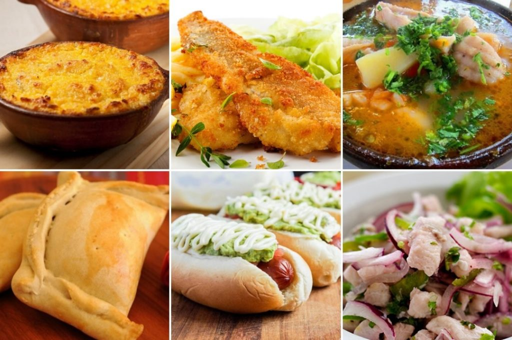

Chile is a beautiful country, diverse in its climates as in its food. Being the second longest country in the world, and entirely by the ocean, Chile's climates range from tropical in the North to polar in the South. The local foods found in each community of Chile accurately reflects the people's resources, needs, wants, and most notably their cravings.
